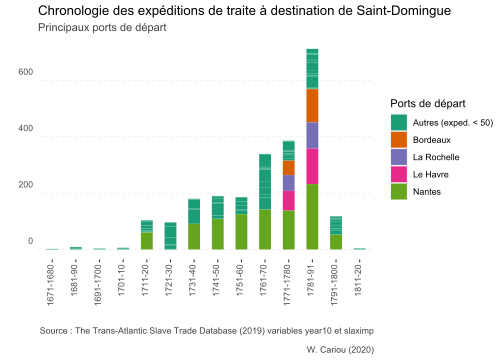

Chapter 4 A analyse temporelle
Une série temporelle ou chronologique (nous utiliserons les deux termes indifféremment) correspond à une série d’observations réalisées au cours du temps.
Packages
4.0.0.1 Tidyverse
- dplyr : grammaire de manipulation des tableaux de données.
- stringr : manipulation de chaînes de caractères.
- ggplot2 :graphiques avancés.
4.0.0.2 Autres packages
- ggpmisc, ggrepel, gganimate : extensions du package ggplot2.
4.1 Chronologie globale de la traite
4.1.1 Bornes chronologiques et durée de la traite
Vous pouvez obtenir des résumés des données par des instructions en base R ou par la fonction summarise du package dplyr. R base retourne les résultats sous la forme de valeurs contrairement à dplyr qui les retourne sous la forme d’un objet de type data.frame.
- Première mention d’une expédition (Base R)
## [1] 1514- Ultime mention d’une expédition (Base R)
## [1] 1866- Durée (étendue) (Base R)
## [1] 352- Package dplyr (package dplyr)
## # A tibble: 1 x 2
## date_max date_min
## <dbl> <dbl>
## 1 1866 15144.1.2 Expéditions de traite
4.1.2.1 Tableau d’effectifs
Il s’agit de compter, pour chacune des valeurs de la variable yearam, le nombre d’observations ayant cette valeur. Ce « nombre de fois » s’appelle l’effectif. La construction d’un tableau d’effectifs appartient à la catégorie des opérations groupées dans Dplyr et s’effectue par le biais de la fonction count. La colonne d’effectifs est automatiquement appelée n.
## # A tibble: 335 x 2
## yearam n
## <dbl> <int>
## 1 1514 1
## 2 1516 1
## 3 1520 1
## 4 1525 1
## 5 1526 5
## 6 1527 1
## 7 1532 5
## 8 1533 1
## 9 1534 2
## 10 1535 2
## # ... with 325 more rows4.1.2.2 Nombre moyen d’expéditions par années
## # A tibble: 1 x 1
## moyenne
## <dbl>
## 1 107.4.1.2.3 Dix années comportant le plus grand nombre d’expéditions
## Selecting by n## # A tibble: 11 x 2
## yearam n
## <dbl> <int>
## 1 1765 339
## 2 1766 354
## 3 1767 332
## 4 1770 332
## 5 1774 359
## 6 1790 345
## 7 1791 347
## 8 1792 360
## 9 1805 351
## 10 1806 371
## 11 1807 3954.1.3 Esclaves embarqués par années
⚠️ Le résultat d’un calcul portant sur des termes incluant des valeurs manquantes est une valeur manquante.
Vous pouvez calculer le nombre total d’esclaves embarqués par années à condition de prendre soin d’omettre les valeurs manquantes des termes du calcul.
Une rapide vérification par l’instruction ci-dessous révèle la présence de valeurs manquantes au sein de la variable slaximp.
## [1] TRUEPrenons par exemple l’année 1653 qui comprend 10 expéditions pour lesquelles le nombre d’esclaves embarqués est partiellement connu.
## # A tibble: 10 x 3
## shipname yearam slaximp
## <chr> <dbl> <dbl>
## 1 Gele Zon (a) Sol 1653 340
## 2 Gele Engel (a) Engel Gabriel 1653 380
## 3 NS del Buen Sucesso y El Santo Cristo 1653 325
## 4 NS del Rosario y S Antonio 1653 325
## 5 S Maria 1653 NA
## 6 NS da Conceição e Penha da França 1653 381
## 7 Luipaard 1653 273
## 8 Fortuijn 1653 334
## 9 Blinde Fortuin 1653 273
## 10 <NA> 1653 406Le résultat de l’addition du nombre d’esclaves embarqués par expédition pour l’année 1653 confirme que la présence de valeurs absentes parmi les termes d’une opération calculatoire retourne comme résultat NA.
voyages %>%
filter (yearam == 1653) %>%
select(shipname, yearam, slaximp) %>%
summarise (n_esc = sum(slaximp))## # A tibble: 1 x 1
## n_esc
## <dbl>
## 1 NAVous devez donc exclure les valeurs manquantes préalablement au calcul à effectuer. Deux syntaxes sont possibles.
# Syntaxe 1
voyages %>%
filter (!is.na(slaximp)) %>%
filter (yearam >= 1653) %>%
group_by (yearam) %>%
summarise (n_esc = sum(slaximp))# Syntaxe 2
voyages %>%
filter (complete.cases(slaximp)) %>%
filter (yearam >= 1653) %>%
group_by (yearam) %>%
summarise (n_esc = sum(slaximp))## # A tibble: 214 x 2
## yearam n_esc
## <dbl> <dbl>
## 1 1653 3037
## 2 1654 5488
## 3 1655 4270
## 4 1656 5675
## 5 1657 4596
## 6 1658 7037
## 7 1659 8184
## 8 1660 5549
## 9 1661 5157
## 10 1662 5290
## # ... with 204 more rows4.1.4 Représentations graphiques
4.1.4.1 Représentation graphique en base R
Vous pouvez “piper” la fonction plot après avoir compté le nombre d’observations par années. Le résultat obtenu est un graphique de type “nuage de points”.

Vous pouvez personnaliser le graphique par une géométrie de type marche d’escalier (t="s") ou une courbe (t="l") et le compléter par un habillage dont la taille des caractères est réglée par la fonction cex.
voyages %>%
count(yearam) %>%
plot(t="s",
main="Chronologie des expéditions de traite atlantique",
sub="Voyages, The TransAtlantic Salve Trade Db",
xlab="années",
ylab="expéditions",
cex.lab=0.80,
cex.sub=0.75)
4.1.4.2 Représentations avancées (ggplot2)
4.1.4.2.1 Graphique en marche d’escalier
Vous pouvez utiliser le package ggplot2 pour régler les intervalles des axes continus (fonction scale_x_continuous) et modifier l’apparence du graphique à l’aide d’un bibliothèque de thèmes ou en employant la fonction .theme pour des paramétrages manuels.
n_exped <- voyages %>%
count(yearam)
gg_chrono1 <- ggplot(n_exped, aes(x= yearam, y= n))
gg_chrono1 +
geom_step (color="#3B748A") +
scale_x_continuous(breaks=seq(1500, 1875, by=25)) +
geom_hline(yintercept=0, linetype="solid", color = "grey") +
labs(title = "Chronologie des expéditions de traite atlantique",
subtitle = "Expéditions",
caption ="Source : The Trans-Atlantic Slave Trade Database (2019).Variable yearam
\n W. Cariou (2020)", x="",
y="") +
theme(plot.caption =element_text(colour = "grey25"),
plot.subtitle = element_text(colour = "grey25"),
axis.line.y = element_blank(),
panel.background = element_blank(),
panel.grid.major.x = element_blank(),
panel.grid.minor.x = element_blank(),
panel.grid.minor.y = element_blank(),
panel.grid.major.y = element_line( size=.1, color="grey", linetype = "dashed"),
axis.ticks.y = element_blank(),
axis.text.y.left = element_text(vjust = -0.9),
axis.line.x = element_blank()) +
scale_y_continuous(limits = c(-10,450), expand = c(0, 0)) 
4.1.4.2.2 Graphique en marche d’escalier animé
Vous pouvez animer votre graphique à l’aide du package gganimate et rajouter l’instruction +transition_reveal(yearam).
library(gganimate)
n_exped <- voyages %>%
count(yearam)
gg_chrono1 <- ggplot(n_exped, aes(x= yearam, y= n))
gg_chrono1 +
geom_step (color="#3B748A") +
geom_text(aes(label = paste("année", yearam,": ", n, "expéd.")), size = 4, color = "black", x = 1560, y = 435) +
scale_x_continuous(breaks=seq(1500, 1875, by=25)) +
labs(title = "Chronologie des expéditions de traite atlantique",
subtitle = "Expéditions",
caption ="Source : The Trans-Atlantic Slave Trade Database (2019).Variable yearam
\n W. Cariou (2020)", x="",
y="") +
theme(plot.caption =element_text(colour = "grey25"),
plot.subtitle = element_text(colour = "grey25"),
axis.line.y = element_blank(),
panel.background = element_blank(),
panel.grid.major.x = element_blank(),
panel.grid.minor.x = element_blank(),
panel.grid.minor.y = element_blank(),
panel.grid.major.y = element_line( size=.1, color="grey", linetype = "dashed"),
axis.ticks.y = element_blank(),
axis.text.y.left = element_text(vjust = -0.9),
axis.line.x = element_blank()) +
scale_y_continuous(limits = c(-10,450), expand = c(0, 0)) +
geom_hline(yintercept=0, linetype="solid", color = "grey") +
transition_reveal(yearam) 
4.1.4.2.3 Dégager les principales variations
Vous pouvez mettre en évidences les principaux pics (stat_peaks) et vallées (stat_valleys) par des symboles (argument shape) et les années correspondantes text_repel) en employant le package complémentaire à ggplot2, ggpmisc. Les arguments ignore_threshold et span permettant de sélectionner les variations les plus significatives. Le chevauchement des étiquettes est réglé par l’argument geom ="text_repel" en lien avec le package ggrepel.
library(ggpmisc)
library(ggrepel)
n_exped_pics_vallees <- voyages %>%
count(yearam)
gg_chrono1 <- ggplot(n_exped_pics_vallees , aes(x= yearam, y= n))
gg_chrono1 +
geom_area(fill = "#93D0BF", alpha = .5) +
scale_x_continuous(breaks=seq(1500, 1875, by = 25)) +
stat_peaks(ignore_threshold = 0.4, colour = "#ff1744", span =15, segment.colour = "black", size = 3, shape = 2) +
stat_peaks(ignore_threshold = 0.4, colour = "#ff1744", span =15, geom ="text_repel", size = 3, fontface="bold") +
stat_valleys(ignore_threshold = - 0.1, colour = "#37535E", span = 15, size = 3, shape=6) +
stat_valleys(ignore_threshold = - 0.1, colour = "#37535E", span = 15, geom ="text_repel", size = 3, fontface="bold") +
labs(title = "Chronologie des expéditions de traite atlantique",
caption ="Source : The Trans-Atlantic Slave Trade Database (2019).Variable yearam", x="",
y="expéditions") +
labs(title = "Chronologie des expéditions de traite atlantique",
subtitle = "Expéditions",
caption ="Source : The Trans-Atlantic Slave Trade Database (2019).Variable yearam
\n W. Cariou (2020)", x="",
y="") +
theme(plot.caption =element_text(colour = "grey25"),
plot.subtitle = element_text(colour = "grey25"),
axis.line.y = element_blank(),
panel.background = element_blank(),
panel.grid.major.x = element_blank(),
panel.grid.minor.x = element_blank(),
panel.grid.minor.y = element_blank(),
panel.grid.major.y = element_line( size=.1, color="grey", linetype = "dashed"),
axis.ticks.y = element_blank(),
axis.text.y.left = element_text(vjust = -0.9),
axis.line.x = element_blank()) +
scale_y_continuous(limits = c(-10,450), expand = c(0, 0)) +
geom_hline(yintercept=0, linetype="solid", color = "grey")
4.1.4.2.4 Dégager une tendance par lissage par moyenne mobile
n_exped <- voyages %>%
count(yearam)
gg_chrono1 <- ggplot(n_exped, aes(x= yearam, y= n))
gg_chrono1 +
geom_area (stat ="identity", fill="#93D0BF") +
geom_line(aes(y=rollmean(n, 25, na.pad=TRUE)), color="#ff1744", size=1) +
geom_area(aes(y=rollmean(n, 25, na.pad=TRUE)), fill="#ff1744", size=1, alpha=.25) +
scale_x_continuous(breaks=seq(1500, 1875, by=25)) +
labs(title = "Chronologie des expéditions de traite atlantique",
subtitle = "Expéditions, moyenne mobile centrée fenêtre de 25 ans",
caption ="Source : The Trans-Atlantic Slave Trade Database (2019).Variable yearam
\n W. Cariou (2020)", x="",
y="") +
theme(plot.caption =element_text(colour = "grey25"),
plot.subtitle = element_text(colour = "grey25"),
axis.line.y = element_blank(),
panel.background = element_blank(),
panel.grid.major.x = element_blank(),
panel.grid.minor.x = element_blank(),
panel.grid.minor.y = element_blank(),
panel.grid.major.y = element_line( size=.1, color="grey", linetype = "dashed"),
axis.ticks.y = element_blank(),
axis.text.y.left = element_text(vjust = -0.9),
axis.line.x = element_blank()) +
scale_y_continuous(limits = c(-10,450), expand = c(0, 0)) +
geom_hline(yintercept=0, linetype="solid", color = "grey")## Warning: Removed 24 rows containing missing values (position_stack).## Warning: Removed 24 row(s) containing missing values (geom_path).
4.1.4.2.5 Tendance et variabilité par boîtes à moustaches
Vous pouvez résumer la distribution des expéditions par années regroupées en périodes par des boîte et moustache. Ce graphique trace une boîte autour du premier et troisième quartile. La médiane est figurée par le trait à l’intérieur de la boite et des moustaches sont tracées au-dessus et au-dessous de la case pour résumer l’étendue générale des observations. La boite à moustaches est dite “élaguée” car les moustaches ne correspond pas aux valeurs minimales et maximales de la série statistique. Des points sont dessinés pour les valeurs aberrantes en dehors des moustaches.
n_exped25 <- voyages %>%
count(yearam, year25) %>%
mutate(year25 = sub("years", "", year25))
gg_chrono1 <- ggplot(n_exped25, aes(x= year25, y = n))
gg_chrono1 +
geom_boxplot(colour = "#3B748A", outlier.colour = "#ff1744", fill ="#93D0BF") +
labs(title = "Chronologie des expéditions de traite atlantique par intervalles de 25 ans",
subtitle = "Distribution des expéditions par années pour chaque intervalle",
caption ="Source : The Trans-Atlantic Slave Trade Database (2019).Variable yearam
\n W. Cariou (2020)", x="",
y="") +
theme(plot.caption =element_text(colour = "grey25"),
plot.subtitle = element_text(colour = "grey25"),
axis.line.y = element_blank(),
panel.background = element_blank(),
panel.grid.major.x = element_blank(),
panel.grid.minor.x = element_blank(),
panel.grid.minor.y = element_blank(),
panel.grid.major.y = element_line( size=.1, color="grey", linetype = "dashed"),
axis.ticks.y = element_blank(),
axis.text.y.left = element_text(vjust = -0.9),
axis.line.x = element_blank()) +
geom_hline(yintercept=0, linetype="solid", color = "grey") +
scale_x_discrete(guide = guide_axis(n.dodge = 2))
4.2 Chronologies comparatives de la traite
4.2.1 Chronologie des expéditions en fonction des pavillons de navires
4.2.1.1 Tableaux
4.2.1.1.1 Tableau long
## # A tibble: 1,386 x 3
## yearam natinimp n
## <dbl> <chr> <int>
## 1 1514 Portugal / Brazil 1
## 2 1516 Portugal / Brazil 1
## 3 1520 <NA> 1
## 4 1525 Portugal / Brazil 1
## 5 1526 Portugal / Brazil 1
## 6 1526 Spain / Uruguay 2
## 7 1526 <NA> 2
## 8 1527 Spain / Uruguay 1
## 9 1532 Portugal / Brazil 3
## 10 1532 Spain / Uruguay 1
## # ... with 1,376 more rows4.2.1.1.2 Tableau large (à double-entrées)
La fonction pivot_wider du package tidyr(cf. tidyverse) vous permet de transformer des lignes en colonnes et ainsi passer d’un format de tableau long à un format large, où les nationalités deviennent des colonnes. names_from indique la colonne contenant les noms des nouvelles variables à créer et values_from indique la colonne contenant les valeurs de ces variables.
## # A tibble: 335 x 11
## yearam `Portugal / Bra~ `NA` `Spain / Urugua~ `Great Britain` France
## <dbl> <int> <int> <int> <int> <int>
## 1 1514 1 NA NA NA NA
## 2 1516 1 NA NA NA NA
## 3 1520 NA 1 NA NA NA
## 4 1525 1 NA NA NA NA
## 5 1526 1 2 2 NA NA
## 6 1527 NA NA 1 NA NA
## 7 1532 3 1 1 NA NA
## 8 1533 NA 1 NA NA NA
## 9 1534 2 NA NA NA NA
## 10 1535 2 NA NA NA NA
## # ... with 325 more rows, and 5 more variables: Netherlands <int>, `Denmark /
## # Baltic` <int>, USA <int>, Other <int>, Portugal <int>4.2.1.2 Représentations graphiques
4.2.1.2.1 Représentation en Base R construite à partir d’une boucle for
- Une boucle appartient à la catégorie des structures de contrôle qui permettent de contrôler le déroulement d’un programme informatique.
- La boucle for permet de répéter les mêmes instructions plusieurs fois.
- Une boucle for possède une limite fixée d’itérations définie à l’avance.
- L’en-tête de boucle :
iest une variable créée par la fonction for. Elle va prendre prend successivement chacune des valeurs unique de la variableexped_flags$natinimpà chaque itération de la boucle.
- Corps de la boucle. A chaque itération :
- On filtre l’objet
exped_flagsense basant sur la variablenatinimpdont la valeur valeur varie en fonction de i. - On stocke le tableau filtré dans un objet appelée graphique.
- on affiche le graphique de i par la fonction plot en définissant x et y et en définissant un titre basé sur i.
- On filtre l’objet
L’instruction par(mfrow=c(3, 3)) en amont de la boucle permet d’afficher les graphiques sous la forme d’une grille de 3 par 3.
# Préparation des données
exped_flags <- voyages %>%
count(yearam, natinimp) %>%
filter(complete.cases(natinimp)) %>%
filter(!natinimp =="Other")
# Affichage
par(mfrow=c(3, 3))
# Boucle
for(i in unique(exped_flags$natinimp)){
graphique <- exped_flags %>%
filter (natinimp == i)
plot(graphique$yearam,
graphique$n,
main=i,
xlab = "",
ylab = "expéditions de traite",
type ="l")
}
4.2.1.3 Représentations graphiques avancées (ggplot2)
4.2.1.3.1 Graphiques juxtaposés, échelle arithmétique
La fonction facet du package ggplot2 partitionne un graphique en une matrice de panneaux en fonction de valeurs à l’instar d’un boucle.
# Préparation des données
flagsyears_a <- voyages %>%
count(yearam, natinimp) %>%
filter(complete.cases(natinimp)) %>%
filter(!natinimp =="Other")
# facet
library(ggplot2)
facet_flags <- ggplot (flagsyears_a, aes(x=yearam, y=n)) +
geom_step (color="#ff1744") +
scale_x_continuous(breaks=seq(1500, 1875, by=50)) +
labs(title = "Chronologie des expéditions de traite atlantique",
subtitle = "Pavillons",
caption ="Source : The Trans-Atlantic Slave Trade Database (2019) variable yearam",
x="", y="expéditions") +
theme(plot.caption =element_text(colour = "grey25"),
plot.subtitle = element_text(colour = "grey25"),
axis.line.y = element_blank(),
panel.background = element_blank(),
panel.grid.major.x = element_blank(),
panel.grid.minor.x = element_blank(),
panel.grid.minor.y = element_blank(),
panel.grid.major.y = element_line( size=.1, color="grey", linetype = "dashed"),
axis.ticks.y = element_blank(),
axis.text.y.left = element_text(vjust = -0.9),
axis.line.x = element_blank()) +
geom_hline(yintercept=0, linetype="solid", color = "grey")
# Création des graphiques juxtaposés
facet_flags + facet_wrap(natinimp ~ ., ncol = 2, scales="free_x")
4.2.1.3.2 Effectifs cumulés croissants, échelle logarithmique
Un graphique logarithmique (ou plus précisément semi-logarithmique) est une représentation graphique d’une série statistique chronologique. Il est défini en abscisse par une échelle arithmétique du temps. Il est défini en ordonnée par une échelle logarithmique. L’utilisation de ce type de graphique n’impose pas de savoir calculer des logarithmes. Les graphiques à progression semi-logarithmique ne se lisent pas comme les graphiques à progression arithmétique. Ils permettent de comparer des rythmes d’évolution sans à avoir à effectuer des calculs. La pente donne le rythme d’évolution et non la quantité. Ils permettent également de représenter des séries statistiques de très forte amplitude dans lesquelles les valeurs se situent dans un intervalle trop grand pour permettre une bonne lisibilité de la courbe. Echelle logarithmique de base 10. On débute à 1 et non 0. Chaque fois que l’on parcours une distance, on multiple le nombre 1 par un 10 au lieu d’ajouter un nombre constant. Si on poursuit on multiple 10 par 10 ce qui fait 100.
# Préparation des données
flagsyears_ecc <- voyages %>%
count(yearam, natinimp) %>%
group_by(natinimp) %>%
mutate(ecc = cumsum(n)) %>%
filter(complete.cases(natinimp)) %>%
filter(!natinimp =="Other" & !natinimp == "Portugal")
n_exped_last <- flagsyears_ecc %>%
slice(which.max(yearam))#
library(ggplot2)
library(viridis)
log_flags <- ggplot (flagsyears_ecc, aes(x=yearam, y=ecc, color=natinimp)) +
geom_line () +
geom_point(data = n_exped_last, aes(x = yearam, y = ecc , group=natinimp), shape = 21, fill = "white", size = 1.8, stroke = 1.2) +
geom_label_repel(data = n_exped_last, aes(x = yearam, y = ecc, label = natinimp)) +
scale_y_log10() +
labs(title = "Chronologie des expéditions de traite atlantique",
subtitle = "Pavillons",
caption ="Source : The Trans-Atlantic Slave Trade Database (2019) variable yearam",
x="", y="expéditions") +
theme(plot.caption =element_text(colour = "grey25"),
plot.subtitle = element_text(colour = "grey25"),
axis.line.y = element_blank(),
panel.background = element_blank(),
panel.grid.major.x = element_blank(),
panel.grid.minor.x = element_blank(),
panel.grid.minor.y = element_blank(),
panel.grid.major.y = element_line( size=.1, color="grey", linetype = "dashed"),
axis.ticks.y = element_blank(),
axis.text.y.left = element_text(vjust = -0.9),
axis.line.x = element_blank(),
legend.position = "none") +
geom_hline(yintercept=0, linetype="solid", color = "grey") +
scale_colour_brewer(palette = "Dark2")
log_flags
4.2.1.4 Chronologie comparative des expéditions de traite en fonction des ports de départs
4.2.1.4.1 Représentation graphique brute
library(ggplot2)
# Création d'un graphique en bâtons
plot_ports_depart_chrono <- ggplot(ports_depart_chrono, aes(x=yearam, y=n, group=ptdepimp)) +
geom_line()
plot_ports_depart_chrono
4.2.1.4.2 Représentation graphique partitionnée des neuf principaux ports (effectifs)
Le graphique brut est illisible. Vous pouvez envisagez un représentation graphique alternative en mettant en évidence les ports les plus actifs en combinant la fonction gghighlight (package gghighlight) et la fonction facet_wrap (package ggplot2). Lors de la préparation des données , vous devez créer deux tableaux de données et les réunir par une jointure.
- Le tableau
ports_depart_chrono_totalcompte le total des expéditions par port pour en afficher le rang (nouvelle colonnerank, fonctiondense_rank). - Le tableau
ports_depart_chrono_anneescompte le nombre d’expéditions par port et part années.
Le tableau final ports_chrono_rank combine les 2 tableaux. Il vous reste à mettre en évidence dans ggplot2 les courbes des principaux ports en se basant sur les valeurs de la colonne rank.
ports_depart_chrono_total <- voyages %>%
count(ptdepimp) %>%
mutate(rank = dense_rank(desc(n)))
ports_depart_chrono_annees <- voyages %>%
count(yearam, ptdepimp) %>%
filter(complete.cases(ptdepimp))
ports_chrono_rank <- left_join(ports_depart_chrono_annees, ports_depart_chrono_total,
by = c("ptdepimp" = "ptdepimp"))
ports_chrono_rank <- ports_chrono_rank %>%
rename(n =n.x ) %>%
select(-n.y)
library(ggplot2)
library(gghighlight)
plot_ports_depart_chrono2 <- ggplot(ports_chrono_rank, aes(x=yearam, y=n, group=ptdepimp)) +
geom_step(aes(x=yearam, y=n, group=ptdepimp) , color="#ff1744" , show.legend=FALSE, size = 0.5) +
gghighlight(max(rank) < 11, use_direct_label = FALSE,
unhighlighted_params = list(size = 0.25, colour = alpha("grey85", 0.4))) +
scale_x_continuous(breaks=seq(1500, 1875, by=100)) +
labs(title = "Chronologie des expéditions de traite atlantique",
subtitle = "Principaux ports de départ",
caption ="Source : The Trans-Atlantic Slave Trade Database (2019) variable yearam",
x = "",
y ="expéditions") +
theme(plot.subtitle = element_text(colour = "grey25"),
plot.caption =element_text(colour = "grey25")) +
theme_minimal() +
theme(plot.subtitle = element_text(colour = "grey25")) +
theme(panel.grid.major = element_blank(),
panel.grid.minor = element_blank())+
facet_wrap(~ ptdepimp, scales="free_x")
plot_ports_depart_chrono2
4.2.1.4.3 Représentation graphique partitionnée des neuf principaux ports (effectifs cumulés croissants)
ports_depart_chrono_total <- voyages %>%
count(ptdepimp) %>%
mutate(rank = dense_rank(desc(n)))
ports_depart_chrono_annees <- voyages %>%
count(yearam, ptdepimp) %>%
filter(complete.cases(ptdepimp))
ports_chrono_rank <- left_join(ports_depart_chrono_annees, ports_depart_chrono_total,
by = c("ptdepimp" = "ptdepimp"))
ports_chrono_rank_ecc <- ports_chrono_rank %>%
rename(n =n.x ) %>%
select(-n.y) %>%
group_by(ptdepimp) %>%
mutate(ecc = cumsum(n)) %>%
ungroup() %>%
arrange(ptdepimp, yearam)
library(ggplot2)
library(gghighlight)
plot_ports_depart_chrono_ecc <- ggplot(ports_chrono_rank_ecc, aes(x=yearam, y=ecc, group=ptdepimp)) +
geom_step(aes(x=yearam, y=ecc, group=ptdepimp), color="#ff1744" , show.legend=FALSE, size = 0.5) +
gghighlight(max(rank) < 11, use_direct_label = FALSE,
unhighlighted_params = list(size = 0.25, colour = alpha("grey85", 0.4))) +
scale_x_continuous(breaks=seq(1500, 1875, by=100)) +
labs(title = "Chronologie des expéditions de traite atlantique",
subtitle ="Principaux ports de départ, effectifs cumulés croissants",
caption ="Source : The Trans-Atlantic Slave Trade Database (2019) variable yearam",
x = "",
y ="expéd.") +
theme_minimal() +
theme(plot.subtitle = element_text(colour = "grey25"),
plot.caption =element_text(colour = "grey25")) +
theme(panel.grid.major = element_blank(),
panel.grid.minor = element_blank())+
facet_wrap(~ ptdepimp, scales="free_x")
plot_ports_depart_chrono_ecc
4.2.1.5 Chronologie d’arrivée des navires, principaux lieux d’achat d’esclaves
lieux_achats <- voyages %>%
select(mjbyptimp, datebuy) %>%
arrange(datebuy) %>%
filter(complete.cases(datebuy))gg_chrono2 <- ggplot(lieux_achats, aes(x= datebuy, y= mjbyptimp))
gg_chrono2 +
geom_point (color="#ff1744", alpha =0.3, size = 1.5, position = position_jitter(width = 0, height = 0.25)) +
scale_x_date(date_breaks = "10 year", date_minor_breaks = "5 year",
date_labels = "%Y") +
labs(title = "Principaux lieux d'achat d'esclaves",subtitle = "",
caption ="Source : The Trans-Atlantic Slave Trade Database (2019) variables mjbyptimp et datebuy",
x="", y="") +
theme_minimal() 
4.2.1.6 Prise en considération des années pour lesquelles des mentions d’expéditions de traite sont absentes.
4.2.1.7 Tableau chronologique des expéditions de traite incluant les années sans observations
## Joining, by = "yearam"## yearam n
## 1 1514 1
## 2 1515 NA
## 3 1516 1
## 4 1517 NA
## 5 1518 NA
## 6 1519 NA
## 7 1520 1
## 8 1521 NA
## 9 1522 NA
## 10 1523 NA
## 11 1524 NA
## 12 1525 1
## 13 1526 5
## 14 1527 1
## 15 1528 NA
## 16 1529 NA
## 17 1530 NA
## 18 1531 NA
## 19 1532 5
## 20 1533 1Pour chaque année de la table chrono on vérifie une correspondance dans le tableau des expéditions n_exped :
- Si correspondance -> la valeur associée de la table de
n_expedest reportée dans la tablechrono(dans nouvelle colonnen).
- Si absence de correspondance -> une valeur
NAest reportée dans la tablechrono(dans nouvelle colonnen).
Cette combinaison des données de plusieurs tables est appelée jointure externe. Elle retourne toutes les lignes de la table chrono même si certaines n’existent pas dans la table n_exped. L’ordre des arguments de la fonction left_join à son importance. Comme on souhaite conserver la totalité des lignes de la table de gauche, cette dernière doit constituer le premier argument de la fonction, autrement-dit, celui de gauche).
4.3 Exemples
4.3.1 Chronologie des expéditions de traite à destination de Saint-Domingue
4.3.1.1 Tableau d’effectifs
Vous devez filtrer les expéditions en vous fondant sur la variable mjselimp (Imputed principal region of slave disembarkation) puis compter le nombre d’expéditions par années d’arrivée en Amérique (variable yearam) avec la fonction count.
## # A tibble: 96 x 2
## yearam n
## <dbl> <int>
## 1 1679 2
## 2 1684 1
## 3 1685 4
## 4 1686 3
## 5 1687 1
## 6 1693 1
## 7 1699 2
## 8 1701 2
## 9 1708 1
## 10 1709 1
## # ... with 86 more rows4.3.1.2 Représentation graphique
Le diagramme en ligne est conçu avec la fonction plot en base R. Elle prend, comme premier argument le tableau de données à visualiser et, comme second argument le type de représentation (ici lpour line). Les arguments qui suivent permettent d’habiller le graphique.
plot(stdoming1,
type="l",
main="Chronologie des expéditions de traite atlantique à destination de Saint Domingue",
sub="Voyages, The TransAtlantic Salve Trade Db (2019)",
xlab="années",
ylab="expéditions",
cex.main=0.9,
cex.sub=0.7,
cex.lab=0.75)
4.3.2 Nombre d’esclaves embarqués par années à destination de Saint-Domingue
4.3.2.1 Tableau
Excluez en premier les expéditions dont le nombre d’esclaves embarqués (variable slaximp ) est inconnu par l’utilisation conjointe des fonctions filteret complete.cases. Regroupez ensuite les années d’arrivée en Amérique en appliquant la fonction group_by à la variable yearam afin de pouvoir résumer les données (summarise) par la somme (sum) des esclaves embarqués.
stdoming2 <- voyages %>%
filter(mjselimp =="Saint-Domingue") %>%
filter(complete.cases(slaximp)) %>%
group_by(yearam) %>%
summarise(n_esc = sum(slaximp))
print(stdoming2)## # A tibble: 96 x 2
## yearam n_esc
## <dbl> <dbl>
## 1 1679 436
## 2 1684 380
## 3 1685 1092
## 4 1686 504
## 5 1687 316
## 6 1693 524
## 7 1699 781
## 8 1701 607
## 9 1708 316
## 10 1709 592
## # ... with 86 more rows4.3.3 Chronologie décennale des expéditions de traite à destination de Saint-Domingue selon les ports de départ
Filtrez les expéditions en vous fondant sur la variable mjselimp (Imputed principal region of slave disembarkation) puis compter le nombre d’expéditions par ports de départs (ptdepimp) et par décennies (variable year10) avec la fonction count.
stdoming_y10A <- voyages %>%
filter(mjselimp =="Saint-Domingue") %>%
count(year10, ptdepimp)
print(stdoming_y10A )## # A tibble: 134 x 3
## year10 ptdepimp n
## <chr> <chr> <int>
## 1 years 1671-1680 France, port unspecified 1
## 2 years 1671-1680 Saint-Malo 1
## 3 years 1681-90 Bordeaux 1
## 4 years 1681-90 Dunkerque 1
## 5 years 1681-90 Honfleur 1
## 6 years 1681-90 La Rochelle 2
## 7 years 1681-90 Le Havre 3
## 8 years 1681-90 Saint-Malo 1
## 9 years 1691-1700 Saint-Malo 1
## 10 years 1691-1700 <NA> 2
## # ... with 124 more rows4.3.3.0.1 Diagramme en barres empilées
Un diagramme à barres empilées permet de visualiser le nombre total des expéditions à destination de Saint-Domingue par décennies et ports de départ des navires.
## # A tibble: 38 x 1
## ptdepimp
## <chr>
## 1 <NA>
## 2 Nantes
## 3 Vlissingen
## 4 Hellevoetsluis
## 5 Bristol
## 6 St. Kitts, port unspecified
## 7 Boston
## 8 St. Thomas
## 9 Bayonne
## 10 Bordeaux
## # ... with 28 more rows38 ports ont pratiqué la traite à destination de Saint-Domingue. Afin d’envisager un diagramme en barres empilées lisible vous devez regrouper les ports dont l’activité est la moins importante sous le dénominatif “autres”. Pour ce faire, les fonctions mutate et replace sont utilisées pour recoder les noms de ports en fonction d’une condition. Ainsi, tous les ports dont le nombre d’expéditions est inférieur à 50 par décennies n < 50 sont renommés en Autres (exped. < 20) permettant de passer de 38 à 5 valeurs différentes.
Enfin le texte years préfixant les décennies est supprimé ou plus exactement remplacé par une chaîne de caractères vide (fonction subassociée à mutate).
library(dplyr)
stdoming_y10B <- voyages %>%
filter(mjselimp =="Saint-Domingue") %>%
count(year10, ptdepimp) %>%
mutate(ptdepimp = replace(ptdepimp, n < 50, "Autres (exped. < 50)")) %>%
mutate(year10 = sub("years", "", year10))
stdoming_y10B## # A tibble: 134 x 3
## year10 ptdepimp n
## <chr> <chr> <int>
## 1 " 1671-1680" Autres (exped. < 50) 1
## 2 " 1671-1680" Autres (exped. < 50) 1
## 3 " 1681-90" Autres (exped. < 50) 1
## 4 " 1681-90" Autres (exped. < 50) 1
## 5 " 1681-90" Autres (exped. < 50) 1
## 6 " 1681-90" Autres (exped. < 50) 2
## 7 " 1681-90" Autres (exped. < 50) 3
## 8 " 1681-90" Autres (exped. < 50) 1
## 9 " 1691-1700" Autres (exped. < 50) 1
## 10 " 1691-1700" Autres (exped. < 50) 2
## # ... with 124 more rowsLe diagramme empilé est réalisé avec le package ggplot2
ggplot(data = stdoming_y10B, aes(y = n, x = year10, fill = ptdepimp)) +
geom_bar(stat="identity",
width = 0.5) +
scale_fill_brewer(palette = "Set2") +
labs(title = "Chronologie des expéditions de traite à destination de Saint-Domingue",
subtitle ="Principaux ports de départ",
caption ="Source : The Trans-Atlantic Slave Trade Database (2019) variables year10 et slaximp
\n W. Cariou (2020)",
x = "",
y ="",
fill = "Ports de départ") +
theme_minimal() +
theme(axis.text.x = element_text(angle = 90, vjust= 0.2, hjust = 1)) 